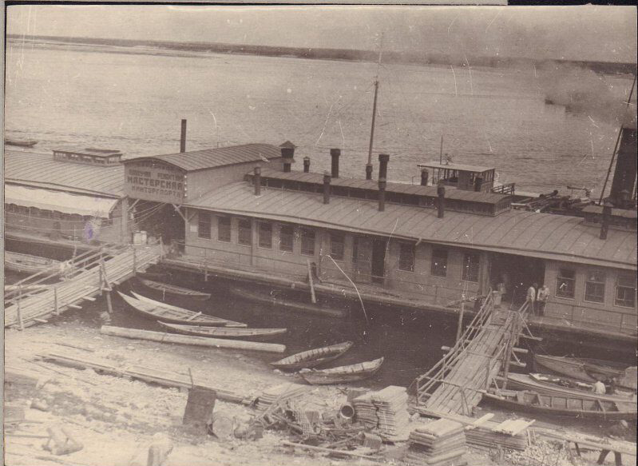

Плавучая мастерская по ремонту судов

Плавучая мастерская Нижегородского (позднее Горьковского) речного порта представляла собой крупный понтон с деревянной надстройкой, оборудованной слесарным, кузнечным и столярным цехами. Мастерская была пришвартована у берега Стрелки и обеспечивала текущий ремонт судов портового флота без необходимости отправлять их на судоремонтные заводы. Внутри располагались верстаки, кузнечные горны, станки для обработки металла и дерева. На крыше виднелись характерные дымовые трубы и вентиляционные короба.
В советский период
Плавучая мастерская появилась одновременно с образованием Горьковского речного порта в 1932 году. Надпись «Мастерские Нижгорпорта» на фасаде здания указывает на первые месяцы работы порта, когда город еще носил название Нижний Новгород (переименование в Горький произошло в ноябре 1932 года). Мастерская ремонтировала буксиры, баржи, катера и вспомогательный флот порта. Во время войны нагрузка на мастерскую возросла многократно: суда работали на износ, перевозя стратегические грузы, и нуждались в постоянном ремонте. Плавучие мастерские были типичным явлением для крупных речных портов СССР и работали вплоть до строительства стационарных ремонтных баз.